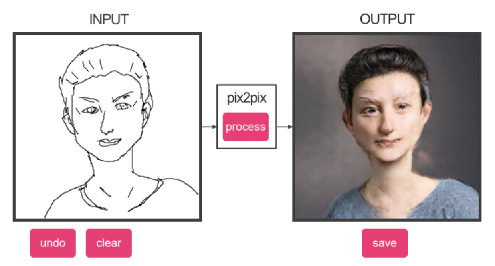
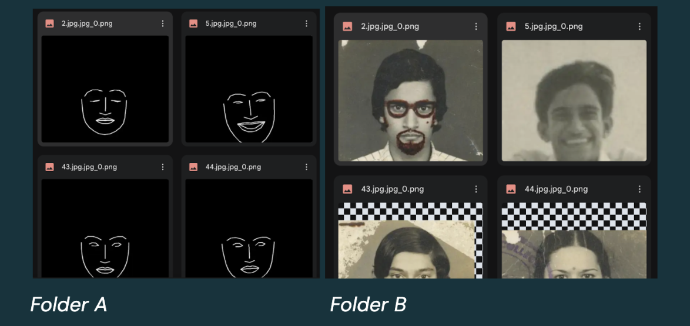
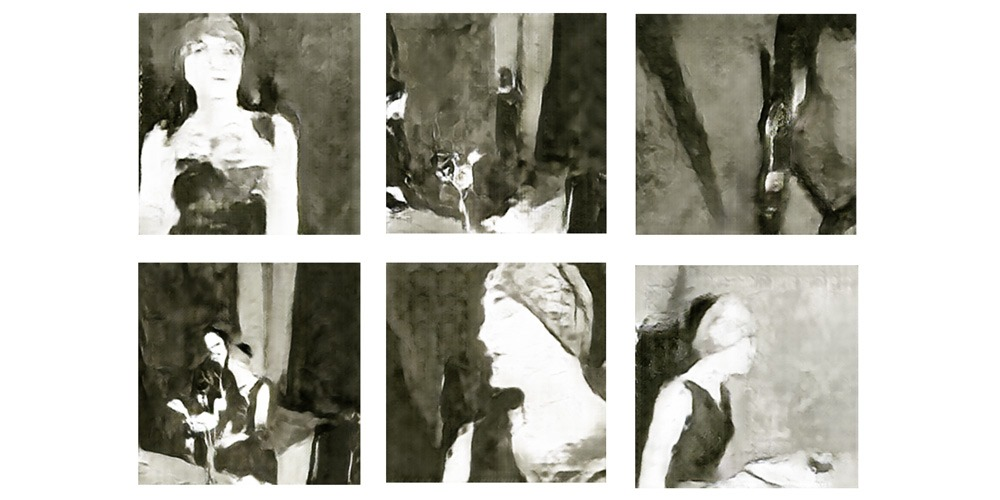
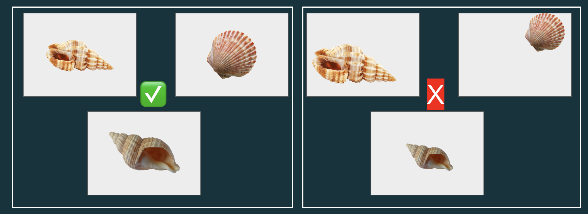

Project 1: Image Models

Over the next few weeks you will train a Pix2Pix conditional GAN model to perform paired image-to-image translation using data you collect yourself. This assignment asks you to think critically about what visual translations matter to you, your community, or your practice.
Before you start collecting data, things to consider:
-
What translation might be meaningful to you or your community?
-
What visual knowledge do you have that AI doesn't?
-
Whose perspective is centered in this translation?
-
What would a corporate dataset miss about this translation?
-----------------------------------------------------------------------------
What your Handmade Dataset will be like:
300+ paired images minimum (you create both A and B versions) . Think of A as
the input and B as the expected output. They should be square and not bigger than 1024 x 1024 pixels.
and the file names should exactly match across folder A & B 
Example:
-
Fill out this datasheet questionnaire
-----------------------------------------------------------------------------
When you train your model
Be ready to:
-
Show Checkpoint files from your training
-
Show 10+ test images showing: Input A | Generated B | Real B
-
Talk through:
-
What transformation did you choose and why?
-
What did the slowness of creating your dataset teach you?
-
What worked? What surprised you?
-
Who could use this tool?
-----------------------------------------------------------------------------
Inspo:

https://webarchive.ars.electronica.art/festival/2017/ai//en/index.html%3Fp=3401.html
Fall of the House of Usher by Anna
Ridler
-------------------------------------------------------------------------
*****What's
due week 2*****
1. Come in with 50% of your B images in a google drive folder. Please submit a small sample of your images in the discord before you finish all ~150 so I can double check your ideas before you put a bunch of effort in :) Submit a link to your google drive folder of images. Don't worry too much about the aspect ratio as we will run python scripts in google colab to batch crop our images next week.
2. Fill out datasheet questionnaire
-------------------------------------------------------------------------
Tips
-
The more homogenous your data is the less of it you need to get good results.
-
So try and be consistent where you can. For example, if you are taking photos, have consistent lighting
-
You're inputs and outputs will be square in aspect ratio. While you don't need to crop your images manually, just remember they will eventually be cropped.
For example, if your dataset is of seashells try to center the
seashell and have the same zoom-level in every image so that when you
eventually crop the images will be consistent 
-------------------------------------------------------------------------
*****What's due week 3*****
1. Come in with 100% of your A & B images in two separate
google drive folders. So that's 300 B images and 300 corresponding A images.
Submit links to your google drive folder of images in discord.
Your images should
be
- no bigger than 1024 x 1024 aspect ratio
- jpeg, jpg or png
- the file names
should exactly match across folders A & B
- no spaces, capitals, or
special characters in your file names
-------------------------------------------------------------------------
*****What's due week 4*****
finish training your model
Submit in Discord a link to a google drive folder containing:
-
Show 10+ generated images/screenshots showing: Input A | Generated B
-
A text document answering:
-
What transformation did you choose and why?
-
What did the slowness of creating your dataset teach you?
-
What worked? What challenges did you face? What surprised you?
-
Who could use this tool? What context do you envision this model in?
-
Back to projects